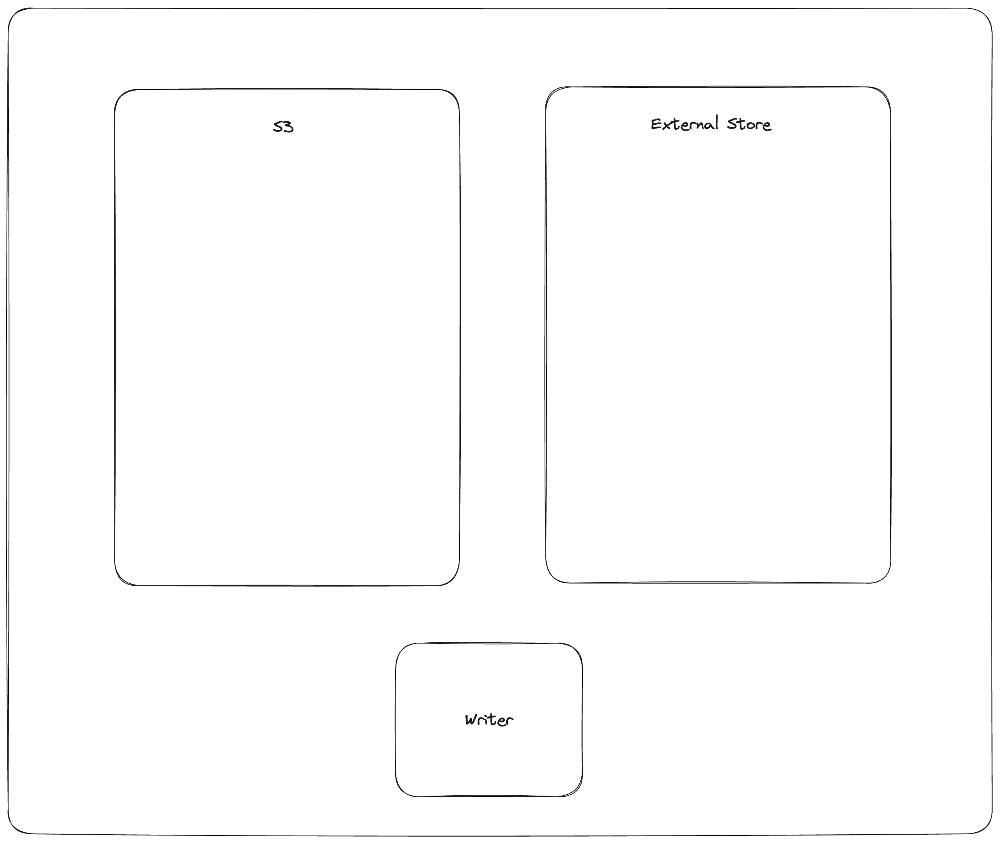

Transaction Specification¶
Transaction Overview¶
Lance implements Multi-Version Concurrency Control (MVCC) to provide ACID transaction guarantees for concurrent readers and writers. Each commit creates a new immutable table version through atomic storage operations. All table versions form a serializable history, enabling features such as time travel and schema evolution.
Transactions are the fundamental unit of change in Lance. A transaction describes a set of modifications to be applied atomically to create a new table version. The transaction model supports concurrent writes through optimistic concurrency control with automatic conflict resolution.
Commit Protocol¶
Storage Primitives¶
Lance commits rely on atomic write operations provided by the underlying object store:
- rename-if-not-exists: Atomically rename a file only if the target does not exist
- put-if-not-exists: Atomically write a file only if it does not already exist (also known as PUT-IF-NONE-MATCH or conditional PUT)
These primitives guarantee that exactly one writer succeeds when multiple writers attempt to create the same manifest file concurrently.
Manifest Naming Schemes¶
Lance supports two manifest naming schemes:
- V1:
{version}.manifest- Monotonically increasing version numbers (e.g.,1.manifest,2.manifest) - V2:
{u64::MAX - version:020}.manifest- Reverse-sorted lexicographic ordering (e.g.,18446744073709551614.manifestfor version 1)
The V2 scheme enables efficient discovery of the latest version through lexicographic object listing.
Transaction Files¶
Transaction files store the serialized transaction protobuf message for each commit attempt. These files serve two purposes:
- Enable manifest reconstruction during commit retries when concurrent transactions have been committed
- Support conflict detection by describing the operation performed
Commit Algorithm¶
The commit process attempts to atomically write a new manifest file using the storage primitives described above. When concurrent writers conflict, the system loads transaction files to detect conflicts and attempts to rebase the transaction if possible. If the atomic commit fails, the process retries with updated transaction state. For detailed conflict detection and resolution mechanisms, see the Conflict Resolution section.
Transaction Types¶
The authoritative specification for transaction types is defined in protos/transaction.proto.
Each transaction contains a read_version field indicating the table version from which the transaction was built,
a uuid field uniquely identifying the transaction, and an operation field specifying one of the following transaction types:
Append¶
Adds new fragments to the table without modifying existing data. Fragment IDs are not assigned at transaction creation time; they are assigned during manifest construction.
Append protobuf message
Delete¶
Marks rows as deleted using deletion vectors.
May update fragments (adding deletion vectors) or delete entire fragments.
The predicate field stores the deletion condition, enabling conflict detection with concurrent transactions.
Delete protobuf message
message Delete {
// The fragments to update
//
// The fragment IDs will match existing fragments in the dataset.
repeated DataFragment updated_fragments = 1;
// The fragments to delete entirely.
repeated uint64 deleted_fragment_ids = 2;
// The predicate that was evaluated
//
// This may be used to determine whether the delete would have affected
// files written by a concurrent transaction.
string predicate = 3;
}
Overwrite¶
Creates or completely overwrites the table with new data, schema, and configuration.
Overwrite protobuf message
message Overwrite {
// The new fragments
//
// Fragment IDs are not yet assigned.
repeated DataFragment fragments = 1;
// The new schema
repeated lance.file.Field schema = 2;
// Schema metadata.
map<string, bytes> schema_metadata = 3;
// Key-value pairs to merge with existing config.
map<string, string> config_upsert_values = 4;
// The base paths to be added for the initial dataset creation
repeated BasePath initial_bases = 5;
}
CreateIndex¶
Adds, replaces, or removes secondary indices (vector indices, scalar indices, full-text search indices).
CreateIndex protobuf message
Rewrite¶
Reorganizes data without semantic modification.
This includes operations such as compaction, defragmentation, and re-ordering.
Rewrite operations change row addresses, requiring index updates.
New fragment IDs must be reserved via ReserveFragments before executing a Rewrite transaction.
Rewrite protobuf message
message Rewrite {
// The old fragments that are being replaced
//
// DEPRECATED: use groups instead.
//
// These should all have existing fragment IDs.
repeated DataFragment old_fragments = 1;
// The new fragments
//
// DEPRECATED: use groups instead.
//
// These fragments IDs are not yet assigned.
repeated DataFragment new_fragments = 2;
// During a rewrite an index may be rewritten. We only serialize the UUID
// since a rewrite should not change the other index parameters.
message RewrittenIndex {
// The id of the index that will be replaced
UUID old_id = 1;
// the id of the new index
UUID new_id = 2;
// the new index details
google.protobuf.Any new_index_details = 3;
// the version of the new index
uint32 new_index_version = 4;
}
// A group of rewrite files that are all part of the same rewrite.
message RewriteGroup {
// The old fragment that is being replaced
//
// This should have an existing fragment ID.
repeated DataFragment old_fragments = 1;
// The new fragment
//
// The ID should have been reserved by an earlier
// reserve operation
repeated DataFragment new_fragments = 2;
}
// Groups of files that have been rewritten
repeated RewriteGroup groups = 3;
// Indices that have been rewritten
repeated RewrittenIndex rewritten_indices = 4;
}
Merge¶
Adds new columns to the table, modifying the schema. All fragments must be updated to include the new columns.
Merge protobuf message
Project¶
Removes columns from the table, modifying the schema. This is a metadata-only operation; data files are not modified.
Project protobuf message
Restore¶
Reverts the table to a previous version.
ReserveFragments¶
Pre-allocates fragment IDs for use in future Rewrite operations.
This allows rewrite operations to reference fragment IDs before the rewrite transaction is committed.
Clone¶
Creates a shallow or deep copy of the table.
Shallow clones are metadata-only copies that reference original data files through base_paths.
Deep clones are full copies using object storage native copy operations (e.g., S3 CopyObject).
Clone protobuf message
message Clone {
// - true: Performs a metadata-only clone (copies manifest without data files).
// The cloned dataset references original data through `base_paths`,
// suitable for experimental scenarios or rapid metadata migration.
// - false: Performs a full deep clone using the underlying object storage's native
// copy API (e.g., S3 CopyObject, GCS rewrite). This leverages server-side
// bulk copy operations to bypass download/upload bottlenecks, achieving
// near-linear speedup for large datasets (typically 3-10x faster than
// manual file transfers). The operation maintains atomicity and data
// integrity guarantees provided by the storage backend.
bool is_shallow = 1;
// the reference name in the source dataset
// in most cases it should be the the branch or tag name in the source dataset
optional string ref_name = 2;
// the version of the source dataset for cloning
uint64 ref_version = 3;
// the absolute base path of the source dataset for cloning
string ref_path = 4;
// if the target dataset is a branch, this is the branch name of the target dataset
optional string branch_name = 5;
}
Update¶
Modifies row values without adding or removing rows. Supports two execution modes: REWRITE_ROWS deletes rows in current fragments and rewrites them in new fragments, which is optimal when the majority of columns are modified or only a small number of rows are affected; REWRITE_COLUMNS fully rewrites affected columns within fragments by tombstoning old column versions, which is optimal when most rows are affected but only a subset of columns are modified.
Update protobuf message
message Update {
// The fragments that have been removed. These are fragments where all rows
// have been updated and moved to a new fragment.
repeated uint64 removed_fragment_ids = 1;
// The fragments that have been updated.
repeated DataFragment updated_fragments = 2;
// The new fragments where updated rows have been moved to.
repeated DataFragment new_fragments = 3;
// The ids of the fields that have been modified.
repeated uint32 fields_modified = 4;
/// The MemWAL (pre-image) that should be marked as merged after this transaction
MemWalIndexDetails.MemWal mem_wal_to_merge = 5;
/// The fields that used to judge whether to preserve the new frag's id into
/// the frag bitmap of the specified indices.
repeated uint32 fields_for_preserving_frag_bitmap = 6;
// The mode of update
UpdateMode update_mode = 7;
}
UpdateConfig¶
Modifies table configuration, table metadata, schema metadata, or field metadata without changing data.
UpdateConfig protobuf message
message UpdateConfig {
UpdateMap config_updates = 6;
UpdateMap table_metadata_updates = 7;
UpdateMap schema_metadata_updates = 8;
map<int32, UpdateMap> field_metadata_updates = 9;
// Deprecated -------------------------------
map<string, string> upsert_values = 1;
repeated string delete_keys = 2;
map<string, string> schema_metadata = 3;
map<uint32, FieldMetadataUpdate> field_metadata = 4;
message FieldMetadataUpdate {
map<string, string> metadata = 5;
}
}
DataReplacement¶
Replaces data in specific column regions with new data files.
DataReplacement protobuf message
UpdateMemWalState¶
Updates the state of MemWal indices (write-ahead log based indices).
UpdateMemWalState protobuf message
UpdateBases¶
Adds new base paths to the table, enabling reference to data files in additional locations.
UpdateBases protobuf message
Conflict Resolution¶
Terminology¶
When concurrent transactions attempt to commit against the same read version, Lance employs conflict resolution to determine whether the transactions can coexist. Three outcomes are possible:
-
Rebasable: The transaction can be modified to incorporate concurrent changes while preserving its semantic intent. The transaction is transformed to account for the concurrent modification, then the commit is retried automatically within the commit layer.
-
Retryable: The transaction cannot be rebased, but the operation can be re-executed at the application level with updated data. The implementation returns a retryable conflict error, signaling that the application should re-read the data and retry the operation. The retried operation is expected to produce semantically equivalent results.
-
Incompatible: The transactions conflict in a fundamental way where retrying would violate the operation's assumptions or produce semantically different results than expected. The commit fails with a non-retryable error. Callers should proceed with extreme caution if they decide to retry, as the transaction may produce different output than originally intended.
Rebase Mechanism¶
The TransactionRebase structure tracks the state necessary to rebase a transaction against concurrent commits:
- Fragment tracking: Maintains a map of fragments as they existed at the transaction's read version, marking which require rewriting
- Modification detection: Tracks the set of fragment IDs that have been modified or deleted
- Affected rows: For Delete and Update operations, stores the specific rows affected by the operation for fine-grained conflict detection
- Fragment reuse indices: Accumulates fragment reuse index metadata from concurrent Rewrite operations
When a concurrent transaction is detected, the rebase process:
- Compares fragment modifications to determine if there is overlap
- For Delete/Update operations, compares
affected_rowsto detect whether the same rows were modified - Merges deletion vectors when both transactions delete rows from the same fragment
- Accumulates fragment reuse index updates when concurrent Rewrites change fragment IDs
- Modifies the transaction if rebasable, or returns a retryable/incompatible conflict error
Conflict Scenarios¶
Rebasable Conflict Example¶
The following diagram illustrates a rebasable conflict where two Delete operations modify different rows in the same fragment:
gitGraph
commit id: "v1"
commit id: "v2"
branch writer-a
branch writer-b
checkout writer-a
commit id: "Delete rows 100-199" tag: "read_version=2"
checkout writer-b
commit id: "Delete rows 500-599" tag: "read_version=2"
checkout main
merge writer-a tag: "v3"
checkout writer-b
commit id: "Rebase: merge deletion vectors" type: HIGHLIGHT
checkout main
merge writer-b tag: "v4"In this scenario:
- Writer A deletes rows 100-199 and successfully commits version 3
- Writer B attempts to commit but detects version 3 exists
- Writer B's transaction is rebasable because it only modified deletion vectors (not data files) and
affected_rowsdo not overlap - Writer B rebases by merging Writer A's deletion vector with its own, write it to storage
- Writer B successfully commits version 4
Retryable Conflict Example¶
The following diagram illustrates a retryable conflict where an Update operation encounters a concurrent Rewrite (compaction) that prevents automatic rebasing:
gitGraph
commit id: "v1"
commit id: "v2"
branch writer-a
branch writer-b
checkout writer-a
commit id: "Compact fragments 1-5" tag: "read_version=2"
checkout writer-b
commit id: "Update rows in fragment 3" tag: "read_version=2"
checkout main
merge writer-a tag: "v3: fragments compacted"
checkout writer-b
commit id: "Detect conflict: cannot rebase" type: REVERSEIn this scenario:
- Writer A compacts fragments 1-5 into a single fragment and successfully commits version 3
- Writer B attempts to update rows in fragment 3 but detects version 3 exists
- Writer B's Update transaction is retryable but not rebasable: fragment 3 no longer exists after compaction
- The commit layer returns a retryable conflict error
- The application must re-execute the Update operation against version 3, locating the rows in the new compacted fragment
Incompatible Conflict Example¶
The following diagram illustrates an incompatible conflict where a Delete operation encounters a concurrent Restore that fundamentally invalidates the operation:
gitGraph
commit id: "v1"
commit id: "v2"
commit id: "v3"
branch writer-a
branch writer-b
checkout writer-a
commit id: "Restore to v1" tag: "read_version=3"
checkout writer-b
commit id: "Delete rows added in v2-v3" tag: "read_version=3"
checkout main
merge writer-a tag: "v4: restored to v1"
checkout writer-b
commit id: "Detect conflict: incompatible" type: REVERSEIn this scenario:
- Writer A restores the table to version 1 and successfully commits version 4
- Writer B attempts to delete rows that were added between versions 2 and 3
- Writer B's Delete transaction is incompatible: the table has been restored to version 1, and the rows it intended to delete no longer exist
- The commit fails with a non-retryable error
- If the caller retries the deletion operation against version 4, it would either delete nothing (if those rows don't exist in v1) or delete different rows (if similar row IDs exist in v1), producing semantically different results than originally intended
External Manifest Store¶
If the backing object store does not support atomic operations (rename-if-not-exists or put-if-not-exists), an external manifest store can be used to enable concurrent writers.
An external manifest store is a key-value store that supports put-if-not-exists operations. The external manifest store supplements but does not replace the manifests in object storage. A reader unaware of the external manifest store can still read the table, but may observe a version up to one commit behind the true latest version.
Commit Process with External Store¶
The commit process follows a four-step protocol:

-
Stage manifest:
PUT_OBJECT_STORE {dataset}/_versions/{version}.manifest-{uuid}- Write the new manifest to object storage under a unique path determined by a new UUID
- This staged manifest is not yet visible to readers
-
Commit to external store:
PUT_EXTERNAL_STORE base_uri, version, {dataset}/_versions/{version}.manifest-{uuid}- Atomically commit the path of the staged manifest to the external store using put-if-not-exists
- The commit is effectively complete after this step
- If this operation fails due to conflict, another writer has committed this version
-
Finalize in object store:
COPY_OBJECT_STORE {dataset}/_versions/{version}.manifest-{uuid} → {dataset}/_versions/{version}.manifest- Copy the staged manifest to the final path
- This makes the manifest discoverable by readers unaware of the external store
-
Update external store pointer:
PUT_EXTERNAL_STORE base_uri, version, {dataset}/_versions/{version}.manifest- Update the external store to point to the finalized manifest path
- Completes the synchronization between external store and object storage
Fault Tolerance:
If the writer fails after step 2 but before step 4, the external store and object store are temporarily out of sync. Readers detect this condition and attempt to complete the synchronization. If synchronization fails, the reader refuses to load to ensure dataset portability.
Reader Process with External Store¶
The reader follows a validation and synchronization protocol:

-
Query external store:
GET_EXTERNAL_STORE base_uri, version→path- Retrieve the manifest path for the requested version
- If the path does not end with a UUID, return it directly (synchronization complete)
- If the path ends with a UUID, synchronization is required
-
Synchronize to object store:
COPY_OBJECT_STORE {dataset}/_versions/{version}.manifest-{uuid} → {dataset}/_versions/{version}.manifest- Attempt to finalize the staged manifest
- This operation is idempotent
-
Update external store:
PUT_EXTERNAL_STORE base_uri, version, {dataset}/_versions/{version}.manifest- Update the external store to reflect the finalized path
- Future readers will see the synchronized state
-
Return finalized path: Return
{dataset}/_versions/{version}.manifest- Always return the finalized path
- If synchronization fails, return an error to prevent reading inconsistent state
This protocol ensures that datasets using external manifest stores remain portable: copying the dataset directory preserves all data without requiring the external store.